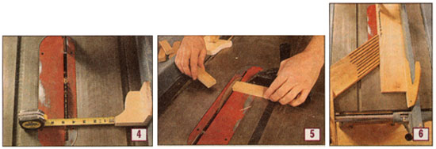
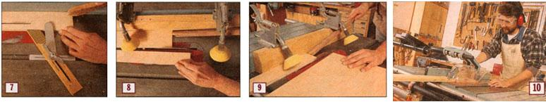

Table Saw Safety
Taming the most dangerous tool in the shop.
By David Mukamal Camp
February/March 1997
In my shop, the table saw is the most essential tool. I need it almost as much as I need my thumbs, but I never forget which is more important. And I never forget which one could potentially remove the other.
A table saw is arguably the most dangerous tool in the woodshop, but a basic understanding of the machine and a few simple precautions will keep you from harm. Most table saw injuries are caused by a phenomenon known as kickback - surrendering control of the material to the machine. When kickback occurs, two things can happen: 1) you can be struck, hard, by flying wood; or 2) as the wood takes off, it can pull portions of your anatomy into the spinning blade.
A Binding Contact
The wood between the fence and the blade has no room to move. The fence holds it snug against the blade, and at the back this can mean kickback. You have to be sure to push the material between the fence and the blade all the way past the blade to avoid this.
I make my hands into compact little pushing units, with the fingers tucked safely away from the spinning blade. My left thumb lays over the first knuckle of my left index finger, creating a notch which I use to press the board against the fence (see photo above). My right hand is open, the thumb hooked over the end of the board to push it along and the index finger applying downward pressure, while the other fingers are wrapped over the top of the fence, out of harm's way. As I feed the material through the cut, my left hand moves along with it, often getting close to the front of the blade, keeping the wood firmly against the fence.
If the strip I'm cutting off is less than 1 1/2-inches wide, I use a push stick in my left hand to apply pressure against the fence, as shown in photo 2 (see Image Gallery). If the fence is set to less than 3 inches, I use a push stick in my right hand to push the material all the way past the blade. A push stick can be as simple as a piece of scrap wood with a notch to fit over the corner of a board.
You never want your left hand to go past the center of the blade and apply pressure that would pinch on those teeth rising up out of the table. It is essential to keep the kerf (the gap created by the cutting blade) from binding on the back of the blade. In some boards, stresses caused by irregular growth of the tree can cause the kerf to close as the wood is being cut. If you notice this happening, hold the board in place, switch off the saw, then fit a wedge into the kerf to hold it open as you finish the cut. A splitter can help prevent this problem as well; see "A Word About Guards," below, for more on this device.
Other Binding Situations
Avoid using the fence to guide a piece that is wider than it is long (photo 3, Image Gallery). This can be a problem because it's hard to keep the piece stable against the fence. It may tilt askew, binding against the blade and causing you to lose control. The least that can happen is that it will fling the board off to the left in an arc. It might also pull your fingers into the blade as it takes off.
In that situation, use the miter gauge to control the workpiece. Move the fence well out of the way and treat it as if you were making a crosscut. Also, don't crosscut a board with the fence restricting it against the blade. If you want to cut several pieces to the same length, you can use a stop block with the fence to register that measurement. Make a stop block by screwing a scrap of plywood to a short block. Measure from the blade to the block (photo 4, Image Gallery) and secure the fence. Clamp the stop block to the fence near the front of the table (photo 5, Image Gallery), so that you can reference the wood for the cut without anything pushing the cut piece into the back of the blade.
Maintaining Control
Keeping the wood against the fence when you're ripping, or against the miter gauge fence when crosscutting will not only help you cut the wood accurately, it will prevent it from becoming a DFO (Dangerous Flying Object). Consider clamping the board to the miter gauge fence, especially when cutting a miter.
There are a number of devices that you can make that will help maintain control. Feather boards (photo 6, Image Gallery) are handy to help hold the wood against the fence. Make one by cutting a long piece of scrap at 45 degrees at one end and using a band saw to cut a series of kerfs about a quarter inch apart. Commercial versions are available; I have one that locks in place in the miter gauge slot and features a metal arm that helps hold the wood down on the tabletop as well (photo 7, Image Gallery).
You might also consider buying a ripping guide like the one in photo 8 (Image Gallery). There are several versions available, but they all work similarly. Spring-loaded rollers press the wood down and toward the fence and roll in only one direction, eliminating the risk of kickback. You need an extra long push stick, as shown in photo 9 (see Image Gallery), to get the material all the way past the blade.
Finally, don't forget about supporting your lumber as it comes off the tabletop. Build an outfeed table or get a roller stand (photo 10, Image Gallery) to keep the weight of the wood from tipping it out of your control.
Paying Attention
There's no need to be afraid of this most essential woodworking machine. Understanding your table saw and respecting its potential for injury is enough to keep you safe.
I've heard that almost everyone who's been bitten by this tool "knew" it was about to happen. In some cases they knew better than to make a cut a certain way, but went ahead because they were in a rush. In others, they heard a little voice in the back of their heads say "wait a minute" just as they were about to make the cut.
If you hear that little voice, pay attention to it. Stop and rethink what you are about to do. Ask yourself if there is a safer way. Can you make a jig that will give you more control?
Don't rush. A trip to the hospital can seriously cut into your work schedule. And don't forget that sometimes the best approach to using a table saw safely is to turn off the lights, lock up the shop, and come back to the project another day.
A Word About Guards
Most of us never install the guards that come with our table saws. The factory-provided guards are all poorly designed; I think machinery manufacturers know we won't use them, so they put little effort into making them well. At best, the guards are awkward and inconvenient. At worst, they are actually a serious safety hazard - you can't see what's happening, they interfere with the cut, and can even cause a kickback.
Table saw guards have two basic components: 1) a shield to cover the spinning blade; and 2) a splitter with anti-kickback pawls. The splitter holds the two halves of the board apart so they don't pinch the back of the blade, and the anti-kickback pawls grab into the wood, allowing it to move in only one direction.
Part of the problem with the guard and splitter is that they can only be used when crosscutting or ripping all the way through a board. If you want to cut a groove, raise a panel, or make any of the basic woodworking joints, they have to come off - even if you're simply removing them in order to take pictures as we do. So it is imperative that any guard be easy to remove and re-install.
Beismeyer and Delta have developed after-market guards that can be purchased as accessories for most machines. The shield on these devices hovers over the blade, suspended by a long arm that reaches over from the side of the machine, allowing clearance for ripping material of any width. It's easy to swing the shield up out of the way or remove it from the supporting arm. The splitters made by these two companies can be removed and installed quickly, without tools. Delta uses a knurled knob that you screw and unscrew; Beismeyer has a simpler, spring-loaded pin that allows the user to snap the splitter in place without even removing the saw's throat plate.
In my shop, I use the Beismeyer splitter with the Delta guard, and I find them so effective that I leave them in place whenever an operation will allow - even when taking photos for my articles.
Table Saw Dos and Don'ts
Do
- Support long material as it comes off the saw.
- Use push sticks for ripping anything less than 3 inches wide.
- Wear eye and ear protection.
- Remove jewelry and restrain long hair and dangling clothing.
- Push the wood all the way clear of the blade.
Don't
- Run any machine if you're tired or your brain is chemically altered.
- Cut anything freehand. Always guide the material with the fence if you're ripping or the miter gauge if you're crosscutting.
- Crosscut a piece of wood with the end contacting the fence.
- Stand in line with the blade.
- Do anything that seems the least bit questionable. Ask yourself if there's a safer way.
The Subtler Dangers
Cutting yourself or getting chips in your eyes are the obvious hazards of using a table saw, but there are others you need to be aware of.
For one thing, your lungs are at risk. Cutting up boards of even the most innocuous wood type creates dust that is a class two carcinogen - as bad for you as inhaling burning tobacco leaves. Then there are other species, including oak and walnut and many exotics, that can have an immediate effect or lead to severe allergic reactions after prolonged exposure. Even if you've resigned yourself to the inevitability of inhaling burning tobacco leaves, you may want to do what you can to save some remnants of your air sacks. Consider a dust collection system to remove the particles as the tool creates them. (For an excellent book on the subject, see Woodshop DustControl, by Sandor Nagyszalanczy, Taunton Press. At the very least, wear a nuisance mask to help filter the air you breathe.
Hearing loss is insidious and cumulative. You won't know you're going deaf until it's too late. Just a few hours of exposure to the decibel level produced by woodworking machines can leave your ears ringing - a sure sign that damage has been done. Use OSHA-approved ear plugs, ear muffs, or both to protect yourself.
|
ERIC O'CONNELL Basic hearing and eye protection is step one. |
 ERIC O'CONNELL If the strip you're cutting off is less than 1 1/2-inches wide, you can use a push stick to apply pressure against the fence, as shown in photo 2 |
ERIC O'CONNELL Avoid using the fence to guide a piece that is wider than it is long. |
|
 ERIC O'CONNELL Measure from the blade to the block (photo 4) and secure the fence. Clamp the stop block to the fence near the front of the table (photo 5), so that you can reference the wood for the cut without anything pushing the cut piece into the back of the blade. Feather boards (photo 6) are handy to help hold the wood against the fence. |
 ERIC O'CONNELL Commercial feather boards are available; I have one that locks in place in the miter gauge slot and features a metal arm that helps hold the wood down on the tabletop as well (photo 7). You might also consider buying a ripping guide like the one in photo 8 (Image Gallery). There are several versions available, but they all work similarly. Spring-loaded rollers press the wood down and toward the fence and roll in only one direction, eliminating the risk of kickback. You need an extra long push stick, as shown in photo 9 (see Image Gallery), to get the material all the way past the blade. |
|